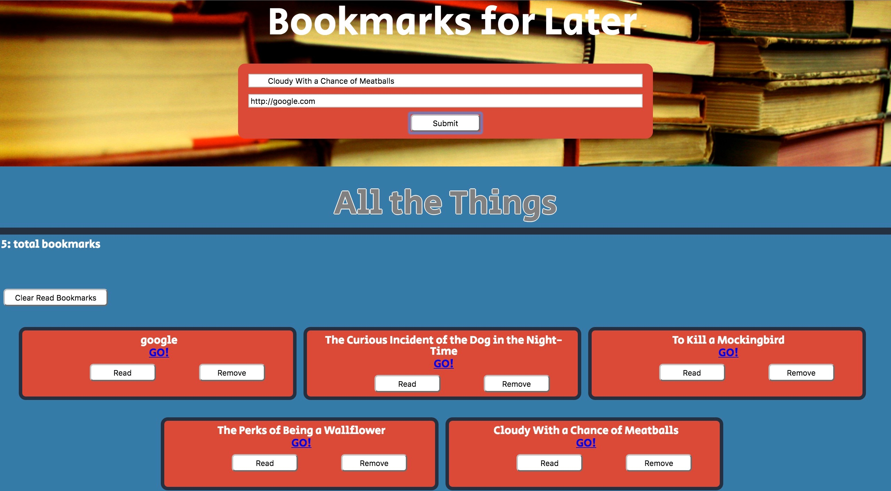
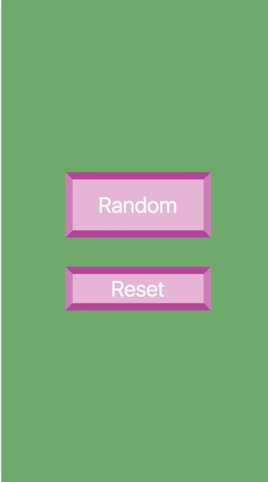
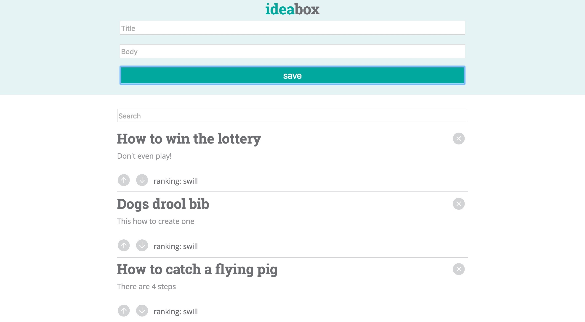
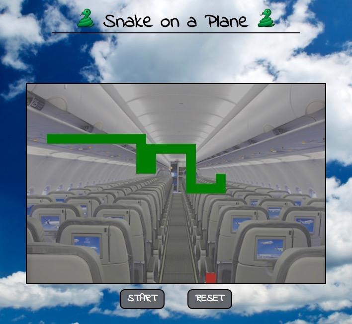

Project 1: Guess What Number I'm Thinking Of...
This was my first project at Turing. I collaborated with Peter Springer and we
created a Number Guessing game. Starting out the program generates a random number
from 1 to 100 and it's the gamers job to guess it right. The program also assists the gamer
with helpful hints on guessing higher or lower. If the gamer gets it correct, the game
generates another number but the min and max ranges decreases and increases by 10.
In order for this game to work, we used HTML to created everything we need. We also used
CSS to add our own creativity in styling the game. Lastly, we used JavaScript to tie everything
together in order for it to work properly. There were plenty of trial and error issues but we're
stoked on how everything turned out. "
Guess It Right
Project 2: Bookmark List

In this project I collaborated with MaryJane Valade and we created a Bookmark List program to test
our jquery skills. We created a program that receives 2 inputs, a title and URL. The code
specifies that the user has to input a valid URL in order to save it to the list. The program has
another feature that enables the user to highlight certain bookmarks and the program records whether
it has been read or not. Also, it allows the user to remove bookmarks while updating the application
that records read, unread, and total amount of bookmarks listed.
Bookmark List
Project 3: Color Changer

This project was our first single day project. The goal for this project was to
generate a random color, !=white, that changes the background color of the screen.
It only required 2 buttons, one randomizes the colors and one that resets the
background color back to white. The buttons also had a unique specifications on styling. Not
only did this project test us on our CSS but our JavaScript as well.
Color Changer
Project 4: Idea Box

In this project I collaborated with Mike Sausa and we learned about keeping 'server' and 'client'
as separate entities. We used JSON and localStorage to store and regenerate ideas inside localStorage.
We created a code to hold ideas inside of an array of objects with four attributes: an unique id,
title, body and quality ranking. We also enabled a feature that lets the user edit any idea
and it would update their localStorage until they removed it. That unique id is hard
coded to that specific idea, and we used it to update any changes made to it's title, body,
or ranking quality. It was also used to find and display any idea that user is trying to
find using the search bar.
Idea Box
Project 5: Snake

For game time Casey Cross and I decided to make Snake! 🐍 We used jquery, mocha, HTML, JavaScript and CSS.
The goal was not only to design but test the implementations of our code. Everyone knows how the game works
but there are several parts to designing the game.
We first had to render a snake on a canvas and make it
move. The next step was to generate food for the snake to eat, but generate it in different locations of
the canvas that the snake does not occupy. Next we had to make the snake grew when the food was eaten.
This was a the tricky part of the design because each segment of the snake has to follow the piece in front
of it. If not, the snake wouldn't zig and zag. Lastly, we had to create code to end the game based on if the
snake hits a wall or runs into itself.
🐍 Snake ✈️